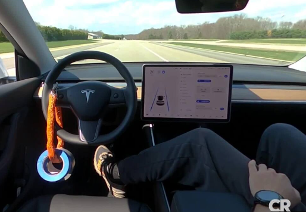

GENERAL
Tesla Autopilot este o tehnologie inovatoare de inteligență artificială
utilizată în mașinile electrice produse de Tesla, Inc.
Această tehnologie a atras atenția publicului și a industriei auto prin capacitatea
sa de a permite mașinilor să conducă aproape autonom pe autostradă, fără intervenția umană constantă.
MOD DE FUNCTIONARE / UTILIZARE
Unul dintre elementele cheie ale Tesla Autopilot este folosirea rețelelor neuronale
profunde, care sunt antrenate cu ajutorul unui volum mare de date strânse de la senzorii
montați pe mașinile Tesla.
Acești senzori includ camere video, radar și ultrasunete, care colectează informații despre
drum, trafic și obiecte în jurul mașinii. Aceste date sunt procesate în timp real de către
rețelele neuronale, care iau decizii referitoare la viteza și direcția de mers, păstrând o
distanță sigură față de alte vehicule și evitând obstacolele.
O altă caracteristică importantă a Tesla Autopilot este capacitatea sa de a se îmbunătăți
în timp, învățând din experiențe.
Cu fiecare mașină Tesla care utilizează Autopilot, mai multe date sunt colectate și analizate,
ceea ce permite îmbunătățirea continuă a algoritmilor de conducere autonomă.
IMPACT
Tesla Autopilot este o tehnologie revoluționară care a avut un impact semnificativ asupra
industriei auto și a accelerat dezvoltarea mașinilor autonome. Cu toate acestea, este important
să se înțeleagă că Autopilot nu este un sistem complet autonom și nu trebuie să fie utilizat fără supraveghere umană adecvată.
În plus, există în continuare provocări tehnologice și legale în ceea ce privește implementarea
mașinilor autonome pe scară largă, iar dezvoltarea acestora va fi necesară înainte ca acestea
să devină o opțiune de conducere pe deplin autonomă și sigură.
